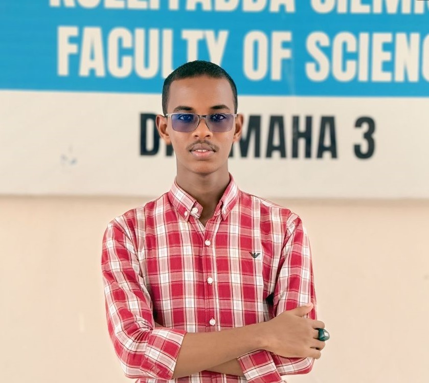

My Background and Personal Story
Who Am I?
Hi! My name is Abdulmaalik Abdullaahi Mohamed and I’m from Somalia. I’m currently studying Computer Science at Somali National University in Mogadishu, and I have a strong passion for Learning, e.g. technology, design, coding and langueges.
When I’m not studying or working on projects, I sometimes do workout, watch documentry series or take a nap. one of biggest dream is to become expert on designs and programing.
I believe in continuous learning, meeting new people, and making the most out of every experience.

Abdulmaalik Abdullahi Mohamed ( Najmudiin)
If you interest to know more about my self click on the contact page above where you can find my adress and contacts.
Thank you for vising my site